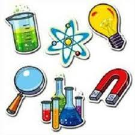

Introduccion al conocimiento de la Fisica
Encontrar una definición clara y precisa acerca de qué es la Física no es sencillo, toda vez que abarca el estudio de múltiples fenómenos naturales; sin embargo, podemos decir que es la ciencia que se encarga de estudiar los fenómenos naturales, en los cuales no hay cambios
en la composición de la materia.
Los cambios que se producen en la naturaleza son estudiados por las ciencias naturales como la Física, la Química, la Biología y la Geografía Física, que se caracterizan porque estudian hechos que tienen una causa y provocan un efecto. Por ejemplo: al frotarnos las manos, generamos calor que se disipa en el medio ambiente; la frotación es la causa y la generación de calor es el efecto, esto lo estudia la Física, ya que es un fenómeno natural en el cual no hay ningún cambio en la composición de la materia
La Química, por su parte, estudiará los fenómenos en los cuales sí hay un cambio en la constitución de la materia, tal es el caso de una reacción química donde el producto obtenido es distinto a los reactivos o sustancias iniciales que intervienen en la reacción
La Física ha tenido un gran desarrollo gracias al esfuerzo de notables investigadores y científicos, quienes al inventar y perfeccionar instrumentos, aparatos y equipos han logrado que el hombre agudice sus sentidos al detectar, observar y analizar muchos fenómenos y acontecimientos presentes en el Universo, mismos imposibles de estudiar sin su ayuda.
Los telescopios, radiotelescopios, radares, microscopios electrónicos, aceleradores de partículas y computadoras,entre otros dispositivos, han permitido importantes aportaciones de la Física a otras ciencias,
Las aportaciones de la Física han permitido la construcción de puentes, carreteras, edificios, complejos industriales, aparatos utilizados en la Medicina (como el rayo láser que se utiliza como un bisturí electrónico para
cirugías de ojos, corazón e hígado), aparatos de radiotelecomunicación, computadoras y lo que actualmente
nos maravilla: la exploración del Universo mediante las naves espaciales.